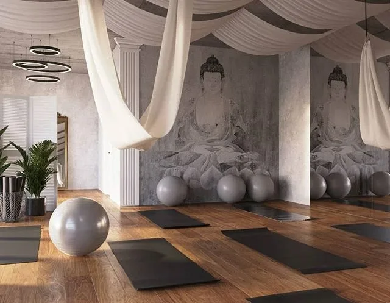
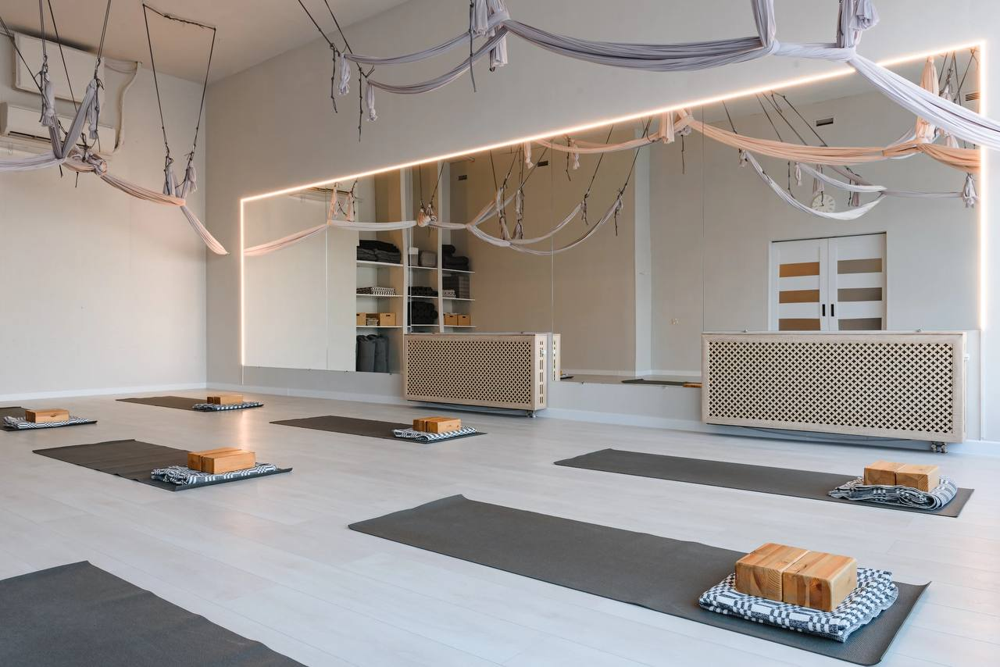
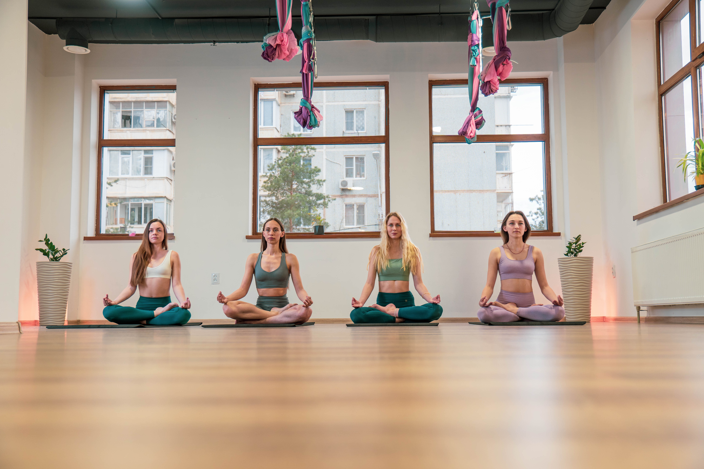

В нашем зале антигравити-йоги вы сможете испытать совершенно новые ощущения от практики. Здесь занятия проходят с использованием специальных гамаков, мячей и лент, которые поддерживают тело, помогают глубже проработать мышцы и суставы, а также позволяют безопасно выполнять перевёрнутые позы и висы.
Антигравити-йога подходит как новичкам, так и опытным практикам. Это отличный способ разнообразить свою практику, улучшить гибкость, координацию и почувствовать себя по-настоящему обновлённым.

Наш зал для обычной йоги - это место, где царит атмосфера спокойствия и уюта. Здесь вы сможете сосредоточиться на практике, услышать своё тело и обрести внутреннюю гармонию.
В этом зале вы сможете познакомиться с основами йоги, углубить свою практику или просто отдохнуть после насыщенного дня. Здесь каждый найдёт свой ритм и почувствует поддержку.

Этот зал создан для тех, кто хочет совместить практику йоги с дополнительными нагрузками и работой в группе. Здесь проходят динамичные занятия, направленные на развитие силы, выносливости и гибкости.
Здесь вы сможете не только укрепить тело, но и зарядиться энергией, повысить выносливость и получить максимум пользы от каждой тренировки. Подходит для тех, кто ищет вызов и разнообразие в практике.
Чтобы вернуться на главную страничку, нажми СЮДА